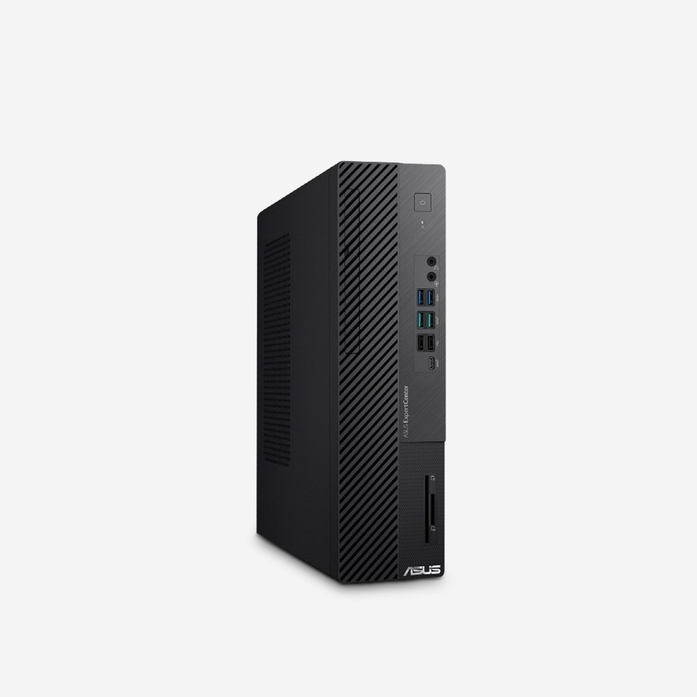
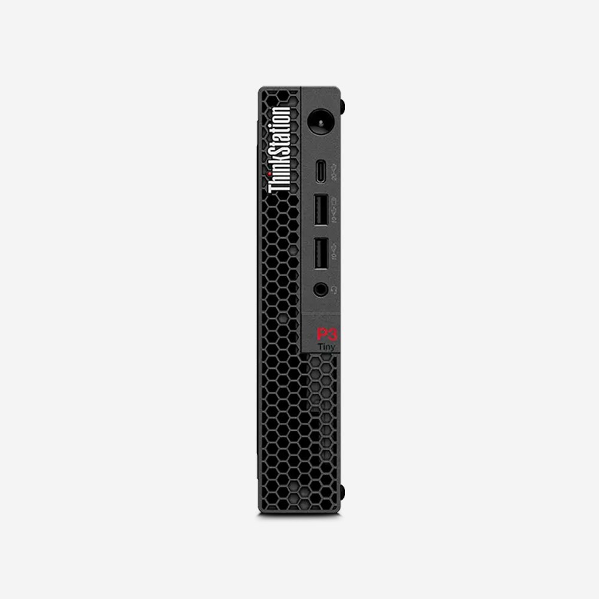
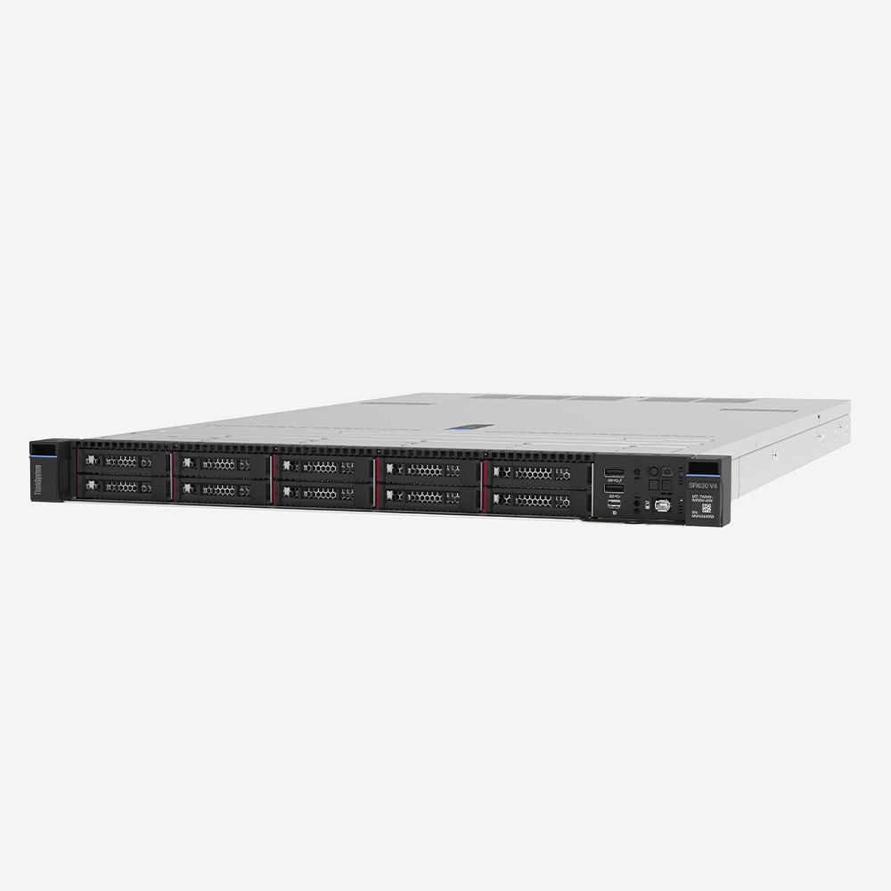
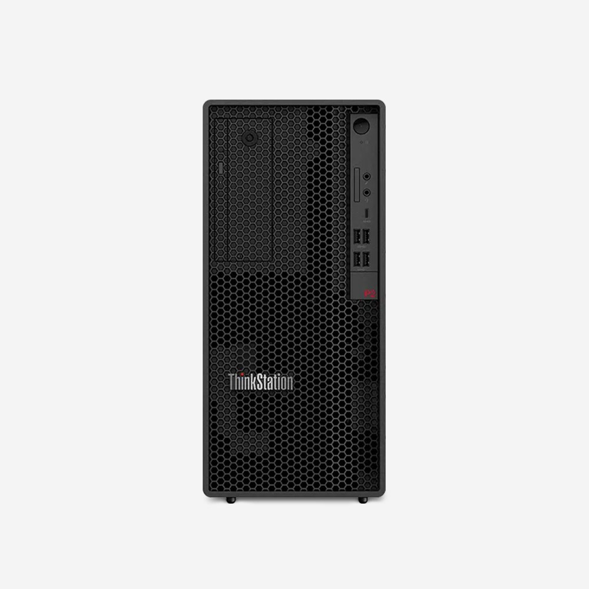
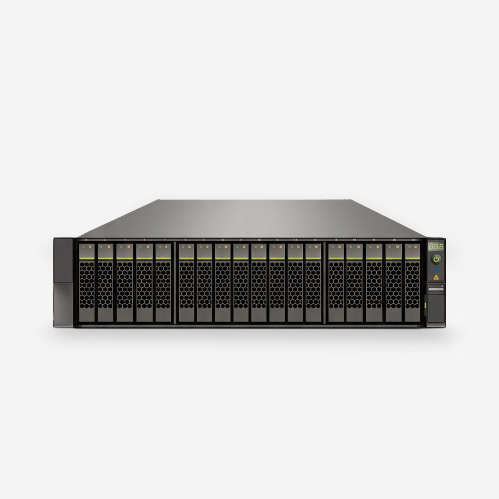
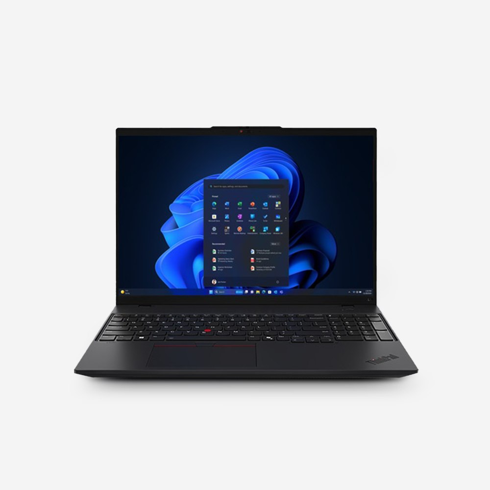
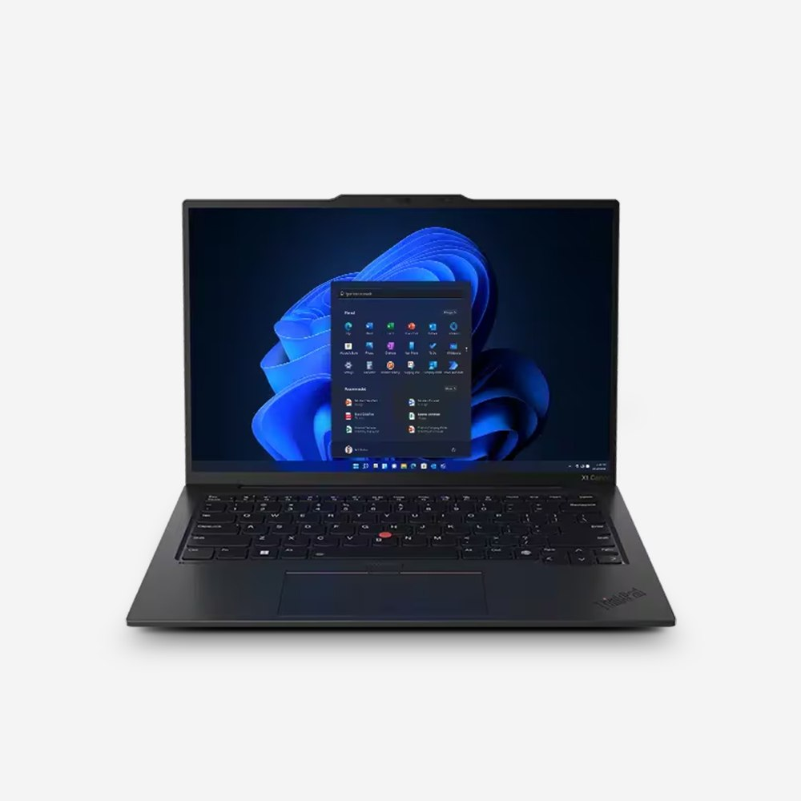

구축사례 목록
 건축 설계
건축 설계설계사무소 CAD·BIM 작업용 워크스테이션 12대 교체
ThinkStation P5 12대를 설치했습니다. 렌더링 대기 시간이 줄어 마감 주간 야근이 줄었다는 의견을 받았습니다.
 제조
제조생산관리 시스템 서버 이중화
ThinkSystem SR650 V4 2대로 이중화했습니다. 기존 장비 데이터 이전과 랙 설치까지 일정 안에 마쳤습니다.
 연구기관
연구기관연구 데이터 공유 스토리지 구축
HCF-A5500 All-Flash 1식을 구축했습니다. 여러 연구팀이 같은 데이터를 빠르게 열 수 있게 됐습니다.
 영상·미디어
영상·미디어영상 제작사 편집실 워크스테이션 증설
좁은 편집실에 맞춰 소형 워크스테이션 6대를 설치했습니다. 편집과 인코딩을 동시에 돌려도 여유가 있습니다.

교육대학 실습실 PC 40대 도입
학기 시작 전에 실습실 PC 40대를 설치하고 이미지 배포까지 마쳤습니다. 수량이 많아 일괄 견적으로 진행했습니다.
 사무
사무중소기업 사무실 PC 25대 일괄 교체
문서·ERP 중심 업무에 맞춰 사양을 통일했습니다. 운영체제 미포함으로 구매해 기존 라이선스를 그대로 썼습니다.

건축 설계인테리어 설계사 모델링용 소형 워크스테이션 8대
책상 아래 공간이 좁아 1L 크기 워크스테이션으로 바꿨습니다. 모델링 작업 속도가 체감될 만큼 빨라졌습니다.

제조공장 MES 서버 1U 교체
랙에 남은 자리가 한 칸뿐이라 1U 서버로 교체했습니다. 야간 작업 시간에 전환해 생산이 멈추지 않았습니다.

연구기관연구소 데이터 분석용 워크스테이션 10대
데이터 분석 작업에 맞춰 메모리를 늘려 구성했습니다. 연구원마다 다르던 사양을 하나로 맞췄습니다.

영상·미디어방송 제작사 편집 원본 공유 스토리지
여러 편집실이 같은 원본 영상을 동시에 열 수 있도록 올플래시 스토리지를 구축했습니다.

교육직업훈련기관 강사용 노트북 30대
강의실을 옮겨 다니는 강사용으로 16인치 노트북을 도입했습니다. 초기 설정을 마친 상태로 납품했습니다.

사무스타트업 임원용 경량 노트북 교체
출장이 잦은 임원용으로 가벼운 노트북을 도입했습니다. 기존 노트북의 데이터 이전까지 지원했습니다.